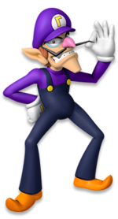

Waluigi
From: Mario Series
height: 7'2
Sex/Gender :Male
Alighnment: Nutral Evil
Weight: 143.3 pounds
Waluigi first appeared in the Mario Tennis games as Luigi's long time rival and Wario's partner they are like the revers of Mario and Luigi.then he joined the Mario Party series roster. He is the main antagonist in the Dance Dance Revolution Mario Mix game and tries to take over the Mushroom Kingdom by collecting the Music Keys wich he will then use to hypnotize the world with his dancing and spread chaos. he shows up in Mario sports games and mario Kart games exept Mario Kart 7 wich was sad for me him being my favorite character in the mario games or i should say series. so one of the most upsetting things maybe not just for me is that he didn't make it as a playable character in super Smash Bros for the 3Ds and Wii U in my opinion that spot was taken by a newer character Rosalina. just why is what i say to that.